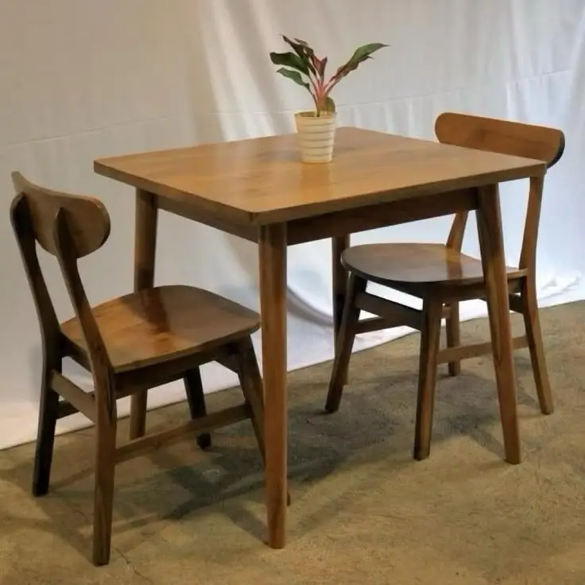
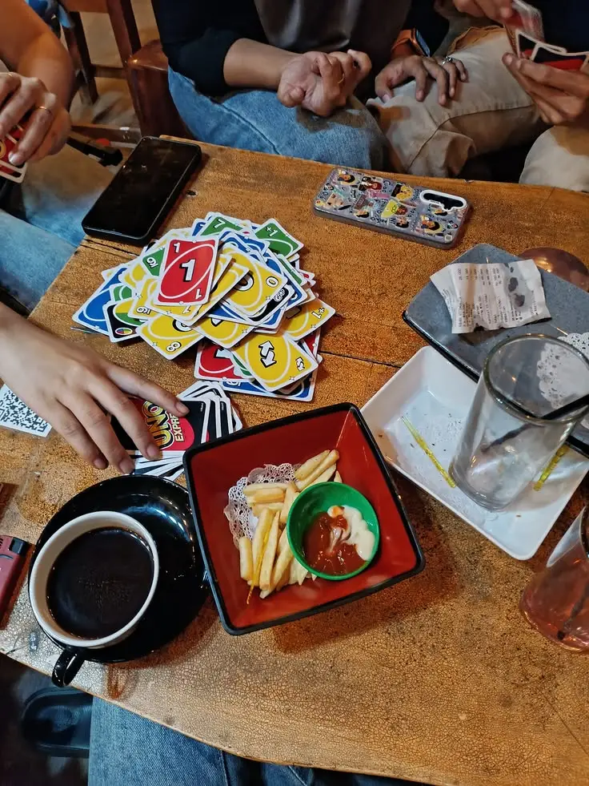
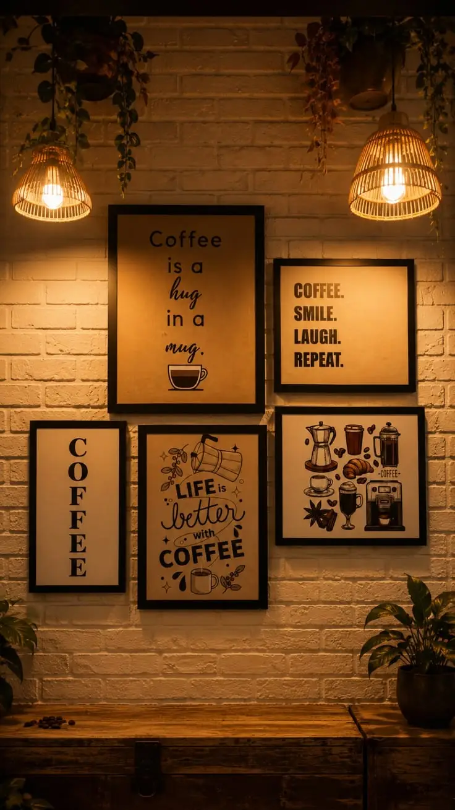

Kopi tubruk, dibuat tanpa buru-buru.
Warung kopi di pojok Jalan Pandanaran, Semarang. Duduk dulu, ngobrol dulu, kopinya menyusul.
Pesan lewat WhatsAppSegelas kopi tubrukRp8.000Gula, manis, atau pahit. Terserah.
Tempatnya
Tempat nongkrong yang bikin betah berlama-lama.



Datang ke sini
Parkir motor luas, parkir mobil di depan toko sebelah.
- Alamat
- Jl. Kenanga Raya No. 12, Semarang
Dekat perempatan lampu merah - Jam buka
- Setiap hari, 07.00 sampai 23.00
- 0812-3456-7890
Peta menyesuaikan lokasi usaha klien